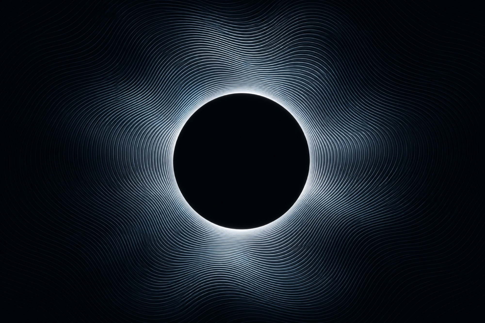

Motive, Texturen und Loops für die LED-Show. Erste Show am 19.12.2026.
Motifs, textures and loops for the LED show. First show 19.12.2026.
Fünfzig LED-Hintergründe: Muster aus der Designgeschichte, ausgeleuchtet in der Same-Moon-Welt aus Mitternacht, Mondweiß, Chrom und Eis.
Fifty LED backgrounds. Patterns from design history, lit and finished in the Same Moon world: midnight, moon white, chrome, ice.
Loops und LED-Tests. Vorschauen, fürs Web verkleinert.
Loops and LED tests. Previews, compressed for the web.